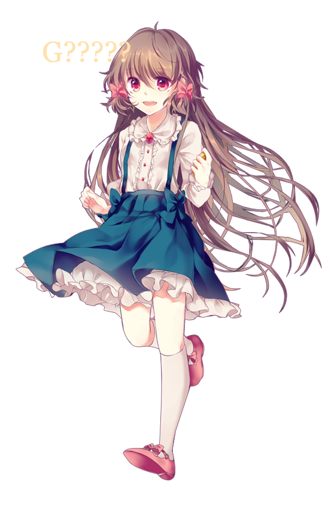

The young girl awaken in an unfamiliar room with a golden pocket mirror with a letter G engraved
into the back. With no memories of who or where she was, she wandered through the gigantic and eerie buildings
to find out her identity. During her journey, she came across a strange boy who constantly put up theatres for her to understand
the character through mockery and disdain.

The young girl meets Fleta, a spoiled and pompous princess who was very
possessive of the young protagonist. Fleta tried to keep her from going anywhere and preventing her from learning the truth.
Ever since meeting she learned that Fleta was a friend in the past but will not reveal who the young girl's identity.
Despite that, Fleta cared for her and apologized for all the wrong she had done to her before Fleta shattered into shards.

After some dreadful encounter, the young girl was saved by Harpae, a warm-hearted
reliable and mature woman who cared for the young girl. After meeting her, she encountered many strange photos of herself
with people whom she do not know but learned bits by bits of herself through her warm interaction with Harpae. After some
time, Harpae and the young girl was caught in a unfortunate accident and ended up in a large basement of a mansion. Harpae panicked as the young girl
brought her courage out to explore a way out. During that time, Harpae lost her sanity for a brief moment to only find herself hurting the young girl
she swore to never hurt. In the end before shattering, Harpae could not take back what she had done and apologized and apologized although she was forgiven.
It was also revealed that she was actually blind as well.

The young girl's encounter with Lisette was a violent one. Cruel and almost unreasonable, Lisette attempted to harm her and shatter the precious pocket mirror.
In the past, Lisette was always blamed for things she have never done by Fleta, Harpae, and the young girl. Their meeting allowed the youjng girl to finally understand most of who she was
beside her name which also eventually revealed why the young girl was there in the first place. The young girl's resilient and kindness was able to get through
to Lisette in which allowed Lisette to forgive her before shattering.
Just like looking at a reflection of a mirror, Enjel appeared before the young girl. Enjel claimed that the young girl's name was Enjel but was quickly denied by Harpae who also claimed that
Enjel was not the young girl's name. Enjel, however, had a secret. Enjel was created by the strange boy who was actually a demon. The young girl's mother made a pact with the demon
to gain a better life-- Rich, money, status, etc. In return, the mother must give the young girl's name to him which means the life she was supposed the receive--A life bathed in gold (Happiness).
The young girl's mother regretted the decision and decided to retaliate which caused her life and the young girl's family. Before that, the mother created the pocket mirror to remind the young girl of
her name. Despite Enjel tried to help and guide the young girl, she had an ulterior motive by stealing her pocket mirror to take on her identity but failed and shattered in regret and pain.
After Enjel failed and shattered, the young girl awakened in a lightly brit room and found a medical report of her file and finally recalled her name.
Her name was Goldia die Heilige and was admitted to an asylum or mental hospital for lunacy, dissociation (multiple personality), and
dementia praecox (schizophrenia). Finally understanding who she was and accepting her other selves who represented the spoiled and hysteric personality (Fleta),
how she decided to turn a blind eye to how mentally ill she was (Harpae), and of course, her own violence and frustration (Lisette). Each encounter were merely a facade of
her dissociation that was given a fleeting form when Goldia was in coma.